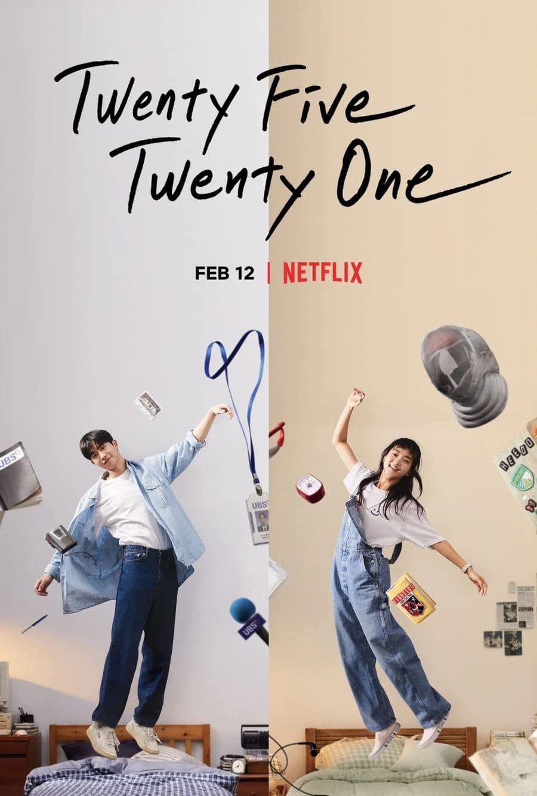
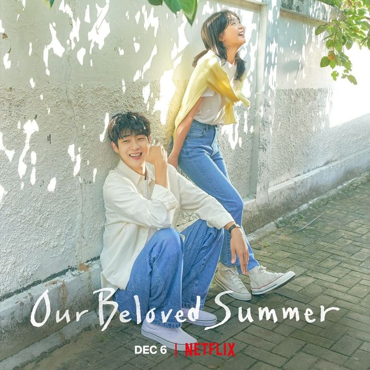

2521 est un kdrama qui explore des thèmes comme le dépassement de soi, l'amour de soi, l'amour du sport, et l'amour dans l'amitié.
Ce k-drama se déroule principalement en 1998, pendant la crise économique asiatique. Il suit Na Hee Do, une lycéenne escrimeuse, et Baek Yi Jin, un jeune homme dont la famille a fait faillite. Le drama raconte leur parcours, leurs rêves et leur relation qui évolue au fil des années. L'histoire aborde des thèmes comme l'amitié, l'amour, la poursuite des rêves et la nostalgie de la jeunesse, sur fond de crise économique. Le récit est raconté à travers les journaux intimes de Hee Do, découverts plus tard par sa fille.
2- Our beloved summer le pire des kdramas slice of life
Ce k-drama romantique raconte l'histoire de Choi Ung et Kook Yeon-soo, deux anciens amoureux du lycée qui se sont séparés il y a 5 ans. Ils avaient juré de ne plus jamais se revoir. Cependant, un documentaire qu'ils avaient tourné ensemble au lycée devient soudainement viral, les forçant à se retrouver pour un nouveau projet. Malgré leurs réticences initiales, ils se redécouvrent et font face à leurs sentiments non résolus. Le drama explore leur évolution personnelle, leurs carrières (Choi Ung est devenu un artiste et Yeon-soo une professionnelle du marketing), et leur relation complexe. Il aborde des thèmes comme l'amour, la croissance personnelle, et la réconciliation avec le passé. "Our Beloved Summer" est apprécié pour son atmosphère nostalgique, son développement de personnages réaliste et sa représentation nuancée des relations.
Points forts : Chimie des acteurs : Choi Woo-shik et Kim Da-mi offrent une performance convaincante et naturelle. Développement des personnages : L'évolution des protagonistes est bien écrite et réaliste. Ambiance nostalgique : Le drama capture parfaitement la mélancolie et la nostalgie de l'amour de jeunesse. Bande sonore : La musique complète parfaitement l'atmosphère du drama. Thèmes matures : Le drama aborde des sujets comme la croissance personnelle et les relations complexes de manière nuancée. Points faibles : Rythme lent : Certains spectateurs peuvent trouver le rythme un peu lent, surtout au milieu de la série. Intrigue secondaire : Quelques sous-intrigues peuvent sembler moins développées par rapport à l'histoire principale. En général, "Our Beloved Summer" est apprécié pour sa représentation réaliste des relations et sa capacité à évoquer des émotions. C'est un choix excellent pour les amateurs de romances matures et de drames axés sur les personnages.